SAFARI
Users
- General & History
- Varieties
- Health and Nutrition
- Links - to information on Cabbages
General & History
Most cabbages have small clusters of flowers on tall spindly or fleshy stems, but plant breeders, starting in Roman times, have coaxed some into producing huge densely packed flower heads which are highly edible when immature. If they are allowed to mature and the flowers open they become bitter. The flowers in the main head are sterile, but once the big head is cut, if the plant is left to mature, the stem will sprout small flower heads that are fertile and produce seeds, used to grow the next generation.
Varieties
Radish Seed Pods
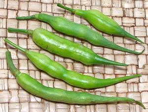 [Mogri (India); Raphanus sativa]
Special varieties of radish are grown for their seed pods rather than
their roots, particularly in India and Germany. These may be eaten
either cooked or raw. In India they are usually cooked as a lightly
spicy vegetable. In Germany they are often served in salads or as an
accompaniment for beer. The European rat-tailed radish grows pods up
to 8 inches long, but the photo specimens were from an Indian market
in Los Angeles, and the longest was about 3 inches long and 0.310 inch
diameter.
Broccoli, Calabrese
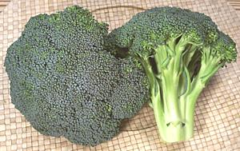 [Broccoli; Brócolis americano (Brazil); Xi Nan Hua Cai (China, lit. Flower Vegetable from the Southwest); B. Brassica oleracea Group Italica]
Broccoli was probably known in Roman times, though it probably looked
much more like the Heirloom Broccoli (next down). It continued to
be developed by growers to produce the large flower heads we know today.
These heads are harvested and eaten well before maturity because they
will open into yellow flowers and become mushy and bitter. Broccoli
stems are also quite edible, though older and tougher ones may need to
be peeled, and leaves are edible too. Like other cabbages, broccoli is
high in fiber, vitamin C, antioxidants and is suspected of significant
anticancer benefits. The photo specimens were about 5-1/2 inches
across, 5-1/2 inches long and weighed 13 ounces. Broccoli is often
sold in narrower heads and/or with longer stems.
Details and Cooking.
Broccoli, Calabrese - Heirloom
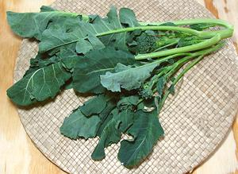 [B. Brassica oleracea Group Italica]
This leafy, small headed variety is probably similar to those known in Roman times. The stems are thin and quite tender so the whole bunch can be used. These were purchased from a specialty grower in Southern California who does a lot of business in greens.
Actually, with some heading heirloom types, once the central head is
harvested, the plants are knocked down. They then send up plenty of side
sprouts similar to these. The side sprouts are generally enjoyed by the
growers and do not reach the markets.
Baby Broccoli
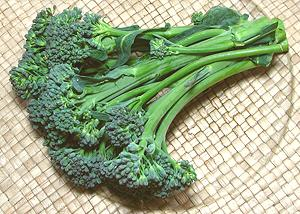 [#3277 Aspirationtm, Brocolinitm, Sweet Baby Broccoli tm, Tenderstemtm Broccoli, Aspabroctm, Brócolis (Brazil); Brassica oleracea, Italica Group x Alboglabra Group]
This is a hybrid between Chinese Broccoli and regular Calabrese broccoli. It was produced by the Sakata Seed Company of Yokohama, Japan, under the name "Aspabroc". It is now marketed under a number of trademarked names. Oddly, in Brazil this is the normal broccoli, with our regular Calabrese broccoli called brócolis americano and sold at a higher price.
This broccoli can now be found in most well stocked supermarkets in
North America, sold in bunches of less than 1/2 pound at yuppified
prices (around 2012 US $7.00 per pound - yuppies will pay the big bucks
for anything labeled "baby"). It can easily be told from other
thin stemmed varieties by it's almost total lack of leaves. The stems
are reasonably tender and edible. This is a characteristic of Chinese
broccoli, but this hybrid has larger flower heads and is
less leafy. Being a hybrid of broccoli x broccoli, it tastes pretty
much like broccoli, but I'm sticking with regular broccoli and Chinese
broccoli, both of which I can buy for well under 2014 US $1.00 per
pound. (Update) One of my usual multi-ethnic markets has started
selling this as "Brocolini" at a more reasonable 2014 US $1.33 per pound.
Broccoli, Chinese
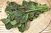 - see Chinese Broccoli. This is the only one of the Asian greens that is actually a broccoli - all the rest are turnip greens. In any case, it is used more as leafy greens so it is on the Greens page.
Broccoli Rabe
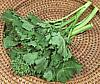 - see Rappini. This "broccoli", which is actually a turnip green, is used more as leafy greens, so it is on our Greens page.
Brocciflower
[Brassica oleracea Group ????] In appearance similar to Broccoflower, this is an artificial, genetically engineered cross between sexually incompatible Cauliflower and Broccoli. Denounced as "Frankenfood" it has not been really commercially successful but is still found in supermarkets now and then. If you are concerned, check the spelling - "o" is OK.
Broccoflower
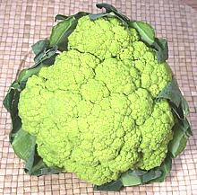 [Brassica oleracea Group Botrytis??]
Is it a cauliflower or a broccoli? It's origin is uncertain so plant
geneticists aren't sure. One thing is certain, it's not a cross between a
cauliflower and a broccoli because the two are sexually incompatible (see
Brocciflower). The "curd" is medium green, a bit
looser than regular cauliflower and it's a bit stemmier. The photo
specimen was 6 inches across and weighed 1 pound 4-1/2 ounces. Without
leaves and their stems it weighed 13 ounces (63% yield). Taste is
considered somewhat lighter and sweeter than regular cauliflower but
it's also much easier to overcook.
Cauliflower
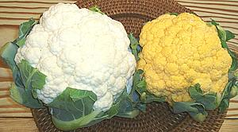 [Brassica oleracea Group Botrytis]
This cabbage grows a huge cluster of flower buds that never mature. Called the "curd", this cluster may be white, lime green or orange depending on variety and how it's grown. For white varieties, leaves are tied over the curd to protect it from the sun so it will remain white and mild in flavor. The orange variety is actually a cross between a wild swamp growing mutant found in Canada and a regular white cauliflower - it has many times the vitamin A content of white cauliflower.
While cauliflower curd is sterile and will never produce seeds, a
plant left to grow after the big flower head is cut will eventually
develop side branches with viable flowers and seeds, which is how
cauliflower is propagated. Cauliflower leaves are used in some cuisines,
but are never available in North American supermarkets or even farmer's
markets, at least not around here.
Chinese Taishan Cauliflower
;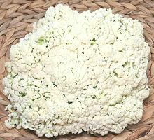
[Brassica oleracea Group Botrytis ??]
This is probably pretty much what European cauliflower looked like in the time of the Roman Empire. Selective breeding during Medieval and Renaissance times developed the heavy, pure white curd cauliflower we enjoy today.
The taste of this vegetable is very much that of cauliflower, but
the flavor is "greener" and sweeter than our regular Western cauliflower
- less of a blank canvas and more of a feature flavor. Raw, it can have
just a touch of bitterness, but not objectionably so, and the bitterness
fades with cooking.
Details and Cooking.
Purple Cauliflower
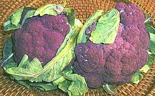 [Brassica oleracea Group Italica]
It looks like a cauliflower but the ISHS says it's a broccoli (see
under Romanesco). In any case it's got a case of
anthocyaninpigments, an antioxidant found also in red cabbage and red
wine.
Romanesco Cauliflower
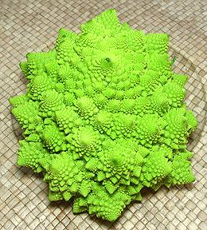 [Fractal Broccoli; Chou Romanesco (French); Broccolo romanesco, Cavolo romanesco (Italian); Pyramidenblumenkohl(German); Brassica oleracea Group Botrytis]
This flowering cabbage is a stunning example of how nature encodes large amounts of genetic information in a mathematical form called fractals. The head is a cone, made up of spirals of smaller but otherwise identical spiral cones, which are in turn made up of smaller spiral cones, ad infinitum. Actually all cauliflowers are built pretty much this way, it just isn't so clear and orderly.
Although first reported from Italy in the 16th century, acceptance of
this variety has been held back by a fierce dispute as to whether it is
a broccoli or a cauliflower - but now the ISHS (International Society for
Horticultural Science) has declared from extensive analysis that it is
Cauliflower. So there, now you can eat it, if you can afford it - but
take care, it reacts very poorly to over-cooking. Steam until just tender.
Details and Cooking.
Health & Nutrition
Both broccoli and cauliflower are considered highly nutritious and packed with vitamins, minerals, and a very high antioxidant content. They are considered to offer some of the most effective anti-cancer benefits known.
Links
- A1 - Brassicaceae Genera - Wikipedia.